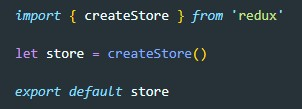
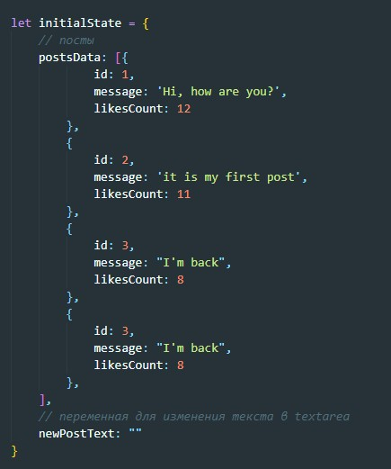
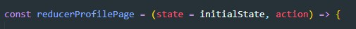
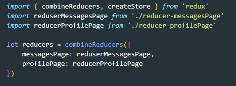
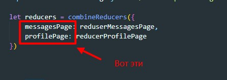
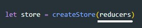

Redux - это библиотека которая используется для управлением state
Что бы установить эту библиотек необходимо выполнить команду в терминале
npm install redux --saveПосле того как библиотека загружена создаем файл, называем его (например redux-store.js). В этом файле будем работать с redux
Еще раз проговорим что такое store. store - это объект, который содержит в себе сам state, а так же методы изменения state (dispatch).
Для того что бы создать store у Redux есть метод - который создает store. Этот метод так и называется createStore(). Что бы получить store мы должны создать переменную и поместить в нее результат функции createStore. Перед этим не забываем импортировать createStore
Теперь store, который мы только что создали имеет все необходимые методы для работы со state
Если сейчас посмотреть на то, как выглядит на данном этапе state, то мы увидим что это пустой объект. Но наша система может быть сложной и иметь множетсво ответвлений в state. Кто в этом случае формирует наш state? А формирует его метод dispatch. При запуске системы store запускает метод dispatch cо своим action. Как это должно работать? Запускается функция dispatch c неизвестным для reducer action (т.е. там будет прописан type который врятли будет в reducer). В этом случае reducer вернет тот state, который он получил не изменяя его. Тогда встает вопрос, а какой state пришел в reducer вместе с action при инициализации системы? ответ НИКАКОЙ! Поэтому при первом запуске мы получим в качестве state undefined
Что бы решить эту проблему мы должны создать в reduser state по умолчанию. Для этого создаем объект initialState и в него помещаем структуру участка state за который отвечает reducer. Например:
Теперь при инициализации функции reducer (а мы помним что reducer это функция, которая принимает state и action) мы записываем аргументы вот так:
т.е. по умолчанию (если не пришло никакого значения) аргумент state будет иметь значение которое находится в переменной initialState
Теперь нам необходимо добавить наши reducer в store который мы создали с помощью createStore. Здесь первое что нам нужно сделать это скомбинировать все наши reducer. Делается это с помощью функции Redux combineReducers. Эта функция создает объект который в качестве методов будет иметь наши reducer. Перед использованием не забываем импортировать reducer и метод combineReducers
ВАЖНО обращать внимание на то как будут называться ключи объекта
Так как в state затем будут созданы ветки именно с такими названиями и по этим названиям мы потом будем обращаться к веткам в state
Теперь что бы наши reducer попали в store мы в качестве аргумента функции createStore передадим только что созданный объект reducers
